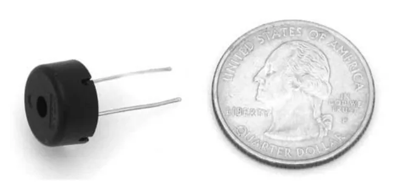
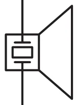

A piezoelectric element (piezo for short), or buzzer, is a small, round device that can be used to generate loud and annoying noises that are perfect for alarms—or for having fun. Figure 4-37 shows a common example, the TDK PS1240, next to an American quarter, to give you an idea of its size.

Piezos contain a very thin plate inside the housing that moves when an electrical current is applied. When alternating current is applied (such as on . . . off . . . on . . . off), the plate vibrates and generates sound waves.
It’s simple to use piezos with Arduino because they can be turned on and off just like an LED. The piezo elements are not polarized and can be connected in either direction.
Piezo Schematic
The schematic symbol for the piezo looks like a loudspeaker (Figure 4-38), which makes it easy to recognize.
